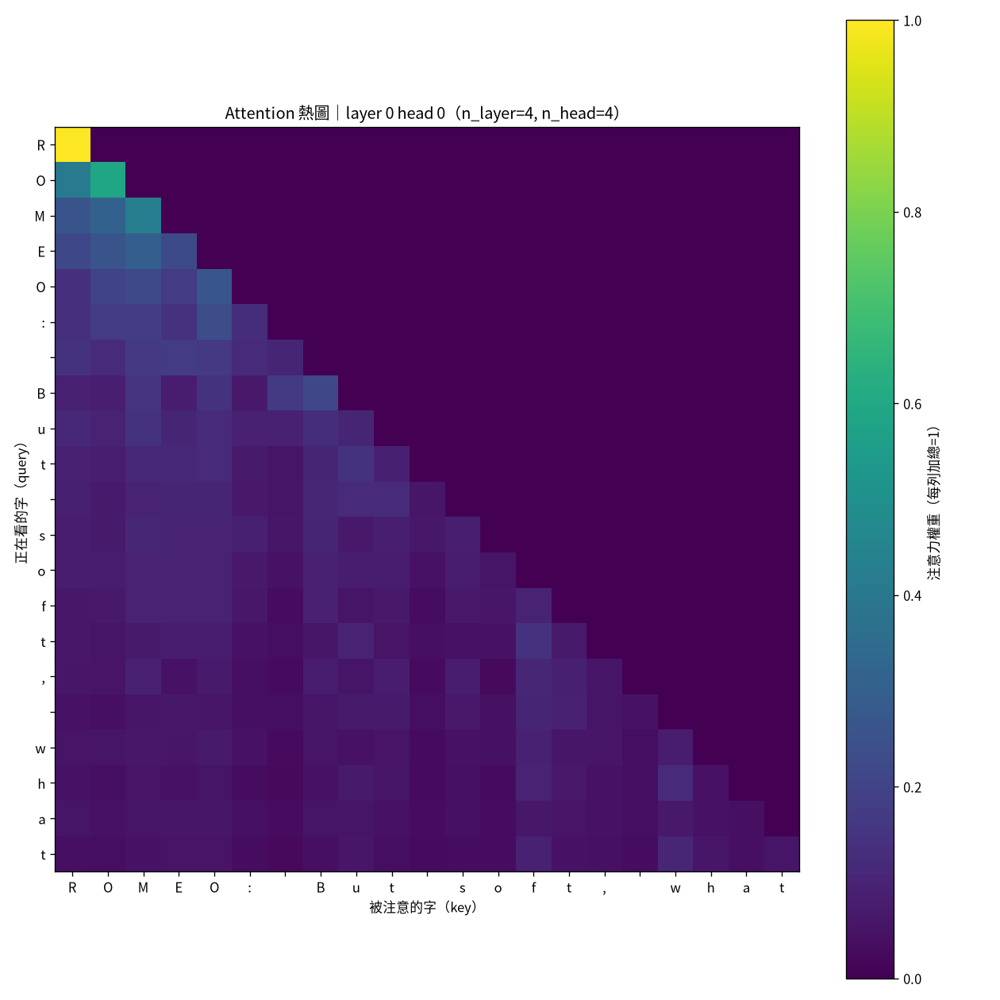
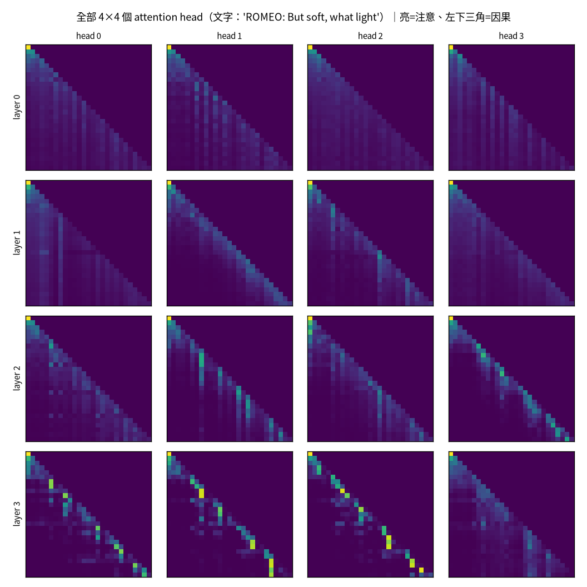

1 最小的 GPT：從 attention 到自回歸
一句話：一個 GPT 的核心只有一件事——給定前面的字，預測下一個字。 而讓它「看上下文」的機制，self-attention，其實可以想成一個模糊版的
HashMap.get()。
1.1 self-attention 是「模糊的 HashMap.get()」
Java 工程師對 HashMap.get(key) 很熟：拿一個 key 去比對、命中就回傳對應的 value。 self-attention 做的是一個模糊版：每個位置產生一個 query，去跟所有位置的 key 算相似度， 不是只取一個，而是用相似度當權重，把所有 value 加權平均回來。
\text{Attention}(Q,K,V)=\operatorname{softmax}\!\Big(\frac{QK^\top}{\sqrt{d}}\Big)V
對照到程式碼，這幾行就是上面那條式子（取自 src/model.py 的樸素版 attention）：
- 1
- query 對所有 key 算點積相似度，並除以 \sqrt{d}（見 小节 1.2）。
- 2
- 因果遮罩：把「未來位置」設成 -\infty，softmax 後變 0——只能看左邊。
- 3
- softmax 把相似度轉成一組和為 1 的權重。
- 4
- 用權重把所有 value 加權平均，得到這個位置的新表示。
取最像的一個（hard attention）不可微，沒法用梯度下降訓練。softmax 的加權平均是個可微的 近似——這也是為什麼深度學習裡到處是 softmax：它把「選擇」變成「平滑、可訓練」的版本。
1.2 為什麼要除以 \sqrt{d}
這個不起眼的 \sqrt{d} 有它的道理。假設 q,k\in\mathbb{R}^d 各維獨立、零均值單位變異， 那麼點積 q\cdot k=\sum_{i=1}^d q_i k_i 的變異數是：
\operatorname{Var}(q\cdot k)=\sum_{i=1}^d \operatorname{Var}(q_i k_i)=d.
也就是說標準差約 \sqrt{d}。維度 d 一大，點積的尺度就跟著放大，softmax 會被推進「幾乎 one-hot」 的飽和區，梯度趨近 0、訓練停滯。除以 \sqrt{d} 把變異數正規化回 1，讓 softmax 不管維度多大都待在 有梯度的區間。
1.3 親眼看 attention 在看哪裡
把訓練好的模型某一層某一個 head 的 attention 權重畫成熱圖，因果結構一目了然：

图 1.1 的下三角形是因果遮罩的直接後果。把所有 head 攤開看（图 1.2）， 會發現不同 head 有不同分工——早層糊而廣、深層尖而準。

1.4 從一個 block 到一個 GPT
一個 Transformer block 把 attention 和一個小 MLP 疊起來，各自帶一條 residual connection （x = x + f(x)）。residual 不是裝飾，是承重牆：
我做過一個實驗：把 model.py 裡的 x + 拿掉、其他不變。結果 val loss 卡在 3.36（≈亂猜）， 有 residual 才掉到 1.77。沒有它，深層網路的梯度會消失、根本訓不動。ResNet 在 2015 年就是用它 解鎖了「疊很深」。
把 N 個 block 疊起來、前面接 token embedding、後面接一個線性層輸出每個字的機率，就是一個 decoder-only GPT。訓練目標單純到不可思議——就是「預測下一個 token」的 cross-entropy（見 章节 5）。
1.5 帶走什麼
- self-attention = 模糊的
HashMap.get()：query 對所有 key 算相似度 → softmax → 加權平均 value。 - \sqrt{d} 縮放是為了讓 softmax 不飽和——一個用變異數論證就能推出來的小細節。
- residual 是讓深層網路訓得動的承重牆，不是可有可無。
- 整個 GPT 的訓練目標就一句話：給前文、預測下一字。
把 repo 裡 make attn 跑起來，改 --layer/--head 看不同 head；再試著（在你腦中或紙上） 預測「如果把 \sqrt{d} 拿掉會怎樣」，然後真的改一行去跑，看 loss 變化。